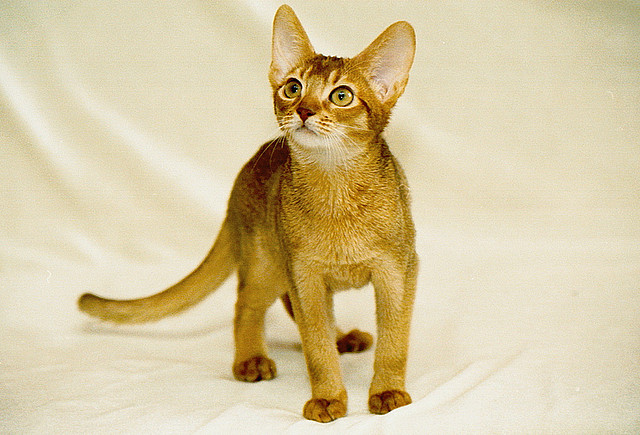

Kot Abisyński
Pochodzenie
Niektórzy wielbiciele abisyńczyków twierdzą, że to pierwsza rasa kotów, jak narodziła się na świecie. Jej współcześni przedstawiciele wywodzić mają się w prostej linii od świętych kotów starożytnego Egiptu.
Charakter i zachowanie
Kot abisyński ma duży temperament. Jest elegancki i pełen gracji. Zwinny, skoczny i dynamiczny, lubi zabawy i wspinaczkę - warto sprawić mu specjalny słupek z podestami. To kot inteligentny, ciekawski i wszędobylski, zwykle przebywa tam, gdzie akurat coś się dzieje. Chociaż jest ruchliwy, łatwo przystosuje się do stałego przebywania w mieszkaniu, ale trzeba dostarczyć mu rozrywek. Chętnie uczy się różnych sztuczek, ale tylko wtedy, gdy sprawia mu to przyjemność.
Pielęgnacja
Pielęgnacja futra kotów abisyńskich, jak wszystkich krótkowłosych ras nie jest kłopotliwa. Krótki włos nie wymaga intensywnego i częstego czesania. Nie są więc to zwierzaki kłopotliwe w utrzymaniu.